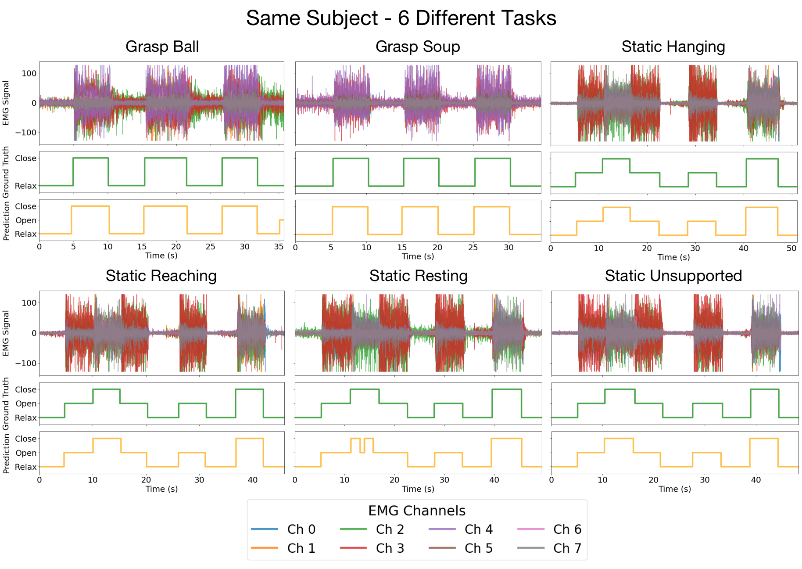
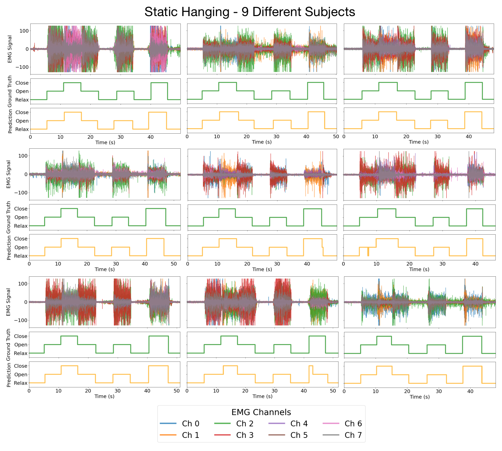
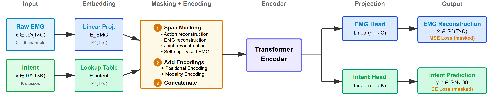
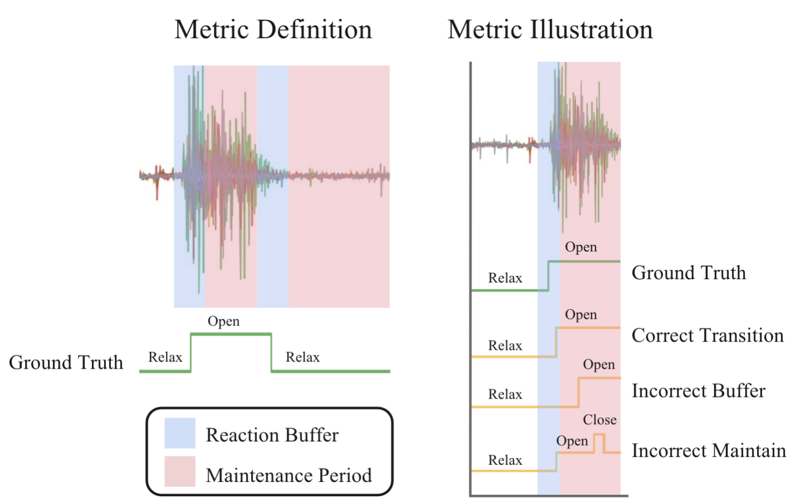

* Equal contribution · + Co-Principal Investigators
ReactEMG is a low-latency, high-accuracy model that predicts hand gestures from forearm EMG signals at every timestep. Its masked-segmentation architecture jointly learns EMG features and user intent, enabling zero-shot generalization without subject-specific calibration and making it well-suited for robotic control.
Surface electromyography (sEMG) signals show promise for effective human-machine interfaces, particularly in rehabilitation and prosthetics. However, challenges remain in developing systems that respond quickly to user intent, produce stable flicker-free output suitable for device control, and work across different subjects without time-consuming calibration. In this work, we propose a framework for EMG-based intent detection that addresses these challenges. We cast intent detection as per-timestep segmentation of continuous sEMG streams, assigning labels as gestures unfold in real time. We introduce a masked modeling training strategy that aligns muscle activations with their corresponding user intents, enabling rapid onset detection and stable tracking of ongoing gestures. In evaluations against baseline methods, using metrics that capture accuracy, latency and stability for device control, our approach achieves state-of-the-art performance in zero-shot conditions. These results demonstrate its potential for wearable robotics and next-generation prosthetic systems.
(1) Same Subject, Different Task. On a new, unseen subject, ReactEMG accurately detects open and close intents across diverse real-world tasks that contain different arm movements.

(2) Same Task, Different Subjects. In the static hanging task (subjects perform open and close gestures with the arm hanging freely at the side) ReactEMG accurately detects intents across different subjects, even when EMG signals exhibit vastly different coactivation patterns.

Our model treats 8-channel EMG signals and intent labels as two synchronized input streams: each is embedded, randomly masked in contiguous spans, and concatenated into a single sequence as input to Transformer encoders. The network is trained to reconstruct masked EMG signals (via a regression loss) and masked intent tokens (via a classification loss), which forces tight alignment between muscle activity and user intention. As a result, it delivers fast, stable intent predictions at every timestep — no manual features or per-user calibration required.

While traditional metrics such as per-timestep raw accuracy are important, they fail to capture situations where a transition to a new gesture is detected with delay, or maintenance of a stable gesture exhibits unwanted flicker in the prediction. To capture such cases, we use a new metric dubbed transition accuracy. According to this metric, a transition is considered to be successfully detected only if the model output correctly transitions between intents close enough to the ground truth change (“reaction buffer” in the image below), and exhibits no instability either before or after the transition (“maintenance period”).

ReactEMG outperforms baselines on both raw accuracy and transition accuracy, particularly on datasets exhibiting direct transitions between different hand gestures and maintenance windows of varying lengths, suggesting future applicability to controlling devices such as wearable robots.
This work was supported in part by an Amazon Research Award and the Columbia University Data Science Institute Seed Program. Ava Chen was supported by NIH grant 1F31HD111301-01A1. The views and conclusions contained herein are those of the authors and should not be interpreted as necessarily representing the official policies, either expressed or implied, of the sponsors. We would like to thank Katelyn Lee, Eugene Sohn, Do-Gon Kim, and Dilara Baysal for their assistance with the hand orthosis hardware. We thank Zhanpeng He and Gagan Khandate for their helpful feedback and insightful discussions.
Check out ReactEMG Stroke, our follow-up paper that adapts the ReactEMG framework to individuals with chronic stroke through healthy-to-stroke few-shot transfer.